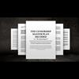

<!DOCTYPE html>
<html lang="en">
 <head>
<!-- Favicon -->
<link rel="shortcut icon" href="../../favicon.ico">
  <meta charset="utf-8"/>
  <title>
   Censorship by tech giants is an assault on the right to exist in an online-dominated society
  </title>
  <meta content="Post on /v/Conspiracy from 2018-07-16 by madmalloy." name="description"/>
  <meta content="Censorship by tech giants is an assault on the right to exist in an online-dominated society" property="og:title"/>
  <meta content="Post on /v/Conspiracy from 2018-07-16 by madmalloy." property="og:description"/>
  <link href="../../static/css/page.css" rel="stylesheet"/>
  <meta content="https://voat.conspiracy.hackliberty.org/thumbnails/d9/69/d969c935-7a68-48dd-867b-4fb867f2f4ce.jpg" property="og:image"/>
  <meta content="https://voat.conspiracy.hackliberty.org/v/conspiracy/2634127.html" property="og:url"/>
  <meta content="width=device-width, initial-scale=1" name="viewport"/>
  <link href="https://voat.conspiracy.hackliberty.org/v/conspiracy/2634127.html" rel="canonical"/>
  <meta content="article" property="og:type"/>
  <meta content="Voat /v/Conspiracy Archive" property="og:site_name"/>
  <meta content="en_US" property="og:locale"/>
  <meta content="summary_large_image" name="twitter:card"/>
  <meta content="Censorship by tech giants is an assault on the right to exist in an online-dominated society" name="twitter:title"/>
  <meta content="Post on /v/Conspiracy from 2018-07-16 by madmalloy." name="twitter:description"/>
  <meta content="https://voat.conspiracy.hackliberty.org/thumbnails/d9/69/d969c935-7a68-48dd-867b-4fb867f2f4ce.jpg" name="twitter:image"/>
 </head>
</html>
<body class="dark">
 <header>
  <nav class="navbar navbar-dark bg-primary">
    <a class="navbar-brand" href="../../index.html">/v/Conspiracy Archive</a>
    <div class="navbar-collapse">
      <ul class="navbar-nav">
        <li class="nav-item">
          <a class="nav-link" href="../../date/page-1.html">Date</a>
        </li>
        <li class="nav-item">
          <a class="nav-link" href="../../comments/page-1.html">Comments</a>
        </li>
        <li class="nav-item">
          <a class="nav-link" href="../../search.html">Search</a>
        </li>
        <li class="nav-item dropdown">
          <a class="nav-link dropdown-toggle" href="#" id="navbarDropdown" role="button" 
             data-toggle="dropdown" aria-haspopup="true" aria-expanded="false">
            subreddits
          </a>
          <div class="dropdown-menu" aria-labelledby="navbarDropdown">
            <a class="dropdown-item" href="https://reddit.conspiracy.hackliberty.org">r/conspiracy</a>
            <a class="dropdown-item" href="https://reddit.pizzagate.hackliberty.org">r/pizzagate</a>
            <a class="dropdown-item" href="https://voat.conspiracy.hackliberty.org">v/conspiracy</a>
            <a class="dropdown-item" href="https://voat.pizzagate.hackliberty.org">v/pizzagate</a>
          </div>
        </li>
      </ul>
    </div>
  </nav>
</header>

 <div id="container">
  <!-- array (
  'submissionid' => 2634127,
  'creationDate' => '2018-07-16 11:53:19',
  'domain' => 'naturalnews.com',
  'formattedContent' => NULL,
  'isAdult' => 0,
  'isAnonymized' => 0,
  'subverse' => 'Conspiracy',
  'thumbnail' => 'd969c935-7a68-48dd-867b-4fb867f2f4ce.jpg',
  'title' => 'Censorship by tech giants is an assault on the right to exist in an online-dominated society',
  'url' => 'https://www.naturalnews.com/2018-07-16-2-censorship-by-tech-giants-is-an-assault-on-the-right-to-exist-in-an-online-dominated-society.html',
  'userName' => 'madmalloy',
  'archivedLink' => NULL,
  'archivedDomain' => NULL,
  'isDeleted' => 0,
) --><div class="content" role="main">
   <div class="sitetable linklisting" id="siteTable">
    <div class="submission id-2634127 link type-text" id="submission-2634127">
     <a name="submissionTop">
     </a>
     <p class="parent">
     </p>
     <a class="thumbnail may-blank" href="https://www.naturalnews.com/2018-07-16-2-censorship-by-tech-giants-is-an-assault-on-the-right-to-exist-in-an-online-dominated-society.html" target="_self">
      
     </a>
     <div class="entry unvoted">
      <p class="title">
       <a class="title may-blank" href="https://www.naturalnews.com/2018-07-16-2-censorship-by-tech-giants-is-an-assault-on-the-right-to-exist-in-an-online-dominated-society.html" tabindex="1" target="_self" title="Censorship by tech giants is an assault on the right to exist in an online-dominated society">
        Censorship by tech giants is an assault on the right to exist in an online-dominated society
       </a>
       <span class="domain">
        (
        <a href="https://archive.searchvoat.co/search.php?d=naturalnews.com">
         naturalnews.com
        </a>
        )
       </span>
      </p>
      <p class="tagline">
       submitted
       <time datetime="2018-07-16T11:53:19+00:00" title="07/16/2018 11:53:19 AM">
        2018-07-16T11:53
       </time>
       by
       <span class="userattrs">
        <a class="author may-blank" href="https://archive.searchvoat.co/search.php?u=madmalloy">
         madmalloy
        </a>
       </span>
      </p>
      <ul class="flat-list buttons">
       <li class="first">
        <a class="comments may-blank" href="https://archive.searchvoat.co/v/Conspiracy/2634127" rel="nofollow">
         12 comments
        </a>
       </li>
      </ul>
     </div>
     <div class="child">
     </div>
     <div class="clearleft">
     </div>
    </div>
    <div class="clearleft">
    </div>
   </div>
   <div class="horizontal-line">
   </div>
   <div class="commentarea">
    <div class="sitetable nestedlisting" id="siteTable">
     <div class="child id-13343872 comment even" style="">
      <div class="entry unvoted">
       <div class="noncollapsed" id="13343872" style=";">
        <p class="tagline">
         <a class="author may-blank" href="https://archive.searchvoat.co/search.php?u=Hypercyberpastelgoth">
          Hypercyberpastelgoth
         </a>
         <span class="userattrs">
         </span>
         <time datetime="2018-07-21T07:17:19+00:00" title="7/21/2018 7:17:19 AM">
          2018-07-21T07:17
         </time>
        </p>
        <div class="usertext-body may-blank-within" id="commentContent-13343872">
         <div class="md">
          <p>
           <p>
            <a href="https://www.sott.net/article/364990-Las-Vegas-Terror-Attack-Clear-Evidence-of-Multiple-Shooters-at-Multiple-Hotels">
             https://www.sott.net/article/364990-Las-Vegas-Terror-Attack-Clear-Evidence-of-Multiple-Shooters-at-Multiple-Hotels
            </a>
           </p>
          </p>
         </div>
        </div>
        <ul class="flat-list buttons">
         <li class="first">
          <a class="bylink" href="https://archive.searchvoat.co/v/Conspiracy/2634127/13343872" rel="nofollow">
           link
          </a>
         </li>
        </ul>
       </div>
      </div>
     </div>
     <div class="child id-13343868 comment even" style="">
      <div class="entry unvoted">
       <div class="noncollapsed" id="13343868" style=";">
        <p class="tagline">
         <a class="author may-blank" href="https://archive.searchvoat.co/search.php?u=Hypercyberpastelgoth">
          Hypercyberpastelgoth
         </a>
         <span class="userattrs">
         </span>
         <time datetime="2018-07-21T07:15:32+00:00" title="7/21/2018 7:15:32 AM">
          2018-07-21T07:15
         </time>
        </p>
        <div class="usertext-body may-blank-within" id="commentContent-13343868">
         <div class="md">
          <p>
           <p>
            Part 3
           </p>
           <p>
            Source: 'LIVE: Las Vegas Police Scanner Active Shooter Situation'
           </p>
           <hr/>
           <p>
            00:58 - Chateau [nightclub] is clear. But we're getting intel that possibly a white male in a black t-shirt with a long rifle was going into nightclubs and areas and clearing people out. He may be the one causing all this pandemonium. Last seen at Chateau, probably now about 20 minutes ago. 
02:03 - We need units on these bridges. We have people running hysterically at Cosmo/Aria bridges. 
03:46 - We're clear at Excalibur. We can redeploy somewhere else if it's needed. 
07:58 - Please be advised that Fox News is headed towards the east side of the festival lot. If somebody can push them back please, they are filming the stuff that is taking on there. 
08:14 - Please be advised, a subject in the Bellagio is hearing a lot of shots being fired. She's on the first floor and she's whispering... And now she's saying suspect is inside with her and she's whispering to not talk. 
08:33 - Time on that report please? 
08:36 - That came in at 23:55. 
12:25 - We're outside the Monte Carlo [resort]. We just had a female wearing full [inaudible] dress uniform, Air Force-related. She had short blonde hair with a cover on braid. She was with another female wearing a black top, blue jeans. They were walking normal when they got to us, then took off running after they passed us, northbound, on the west side of the street, going towards city center. 
14:20 - The plates gonna be Adam Charlie 0027, Nevada. Newer model black Audi SUV. The car was dropped off at 22:13 in the valet of the Luxor. Four males got out. The first is an AMA ['Asian male adult', LV police code] with a beige shirt and green shorts. The second is an AMA with black shirt, khaki shorts. The third is an AMA with a yellow and black shirt, and khaki shorts. The fourth is a WMA with a t-shirt, dark shorts, a hat and a beard. Luxor security is currently backtracking video to find out where they went. 
17:39 - Possible suspect behind a trash can outside CVS, north of Monte Carlo. We're pulling him out now. Possible weapon. 
19:37 - [inaudible] code red ['emergency exists', LV police code]. 
19:40 - Ok copy, all units, we're gonna give [inaudible] code red on this channel, at 00:10 hours. 
19:49 - We got two in custody, taking the third into custody now, still complying. 
19:56 - Be advised, we were told that there's three females by the trash area behind the CVS, looked like they possibly had weapons in their hands. We haven't seen any yet. Still complying. 
20:17 - They did [inaudible] something on the ground. Unknown what it was though. 
25:07 - Is there a unit that can reroute to Mirage [resort]? There's a female calling in whispering that the shooter is there on the 7th floor of the garage. 
28:57 - As of right now, we have no hot zones. 
43:45 - As we move into the next phase of this, we will place teams along the Strip at each hotel. 
44:38 - I just had a liaison from Flamingo hotel approach me, saying that their surveillance showed a WMA and two WFAs ['white female adults', LV police code] get out of a cab, grab a silver extinguisher and place it behind a slot machine, about 23:59 hours. 
48:26 - North Las Vegas SWAT got some intel about shots fired at Harrah's. Do we have a strike team there that can confirm that? 
01:01:22 - [inaudible] off of Reno, they're taken into custody - one white male, had a backpack with him, heading directly to the southeast of the Tropicana. 
01:02:17 - Units now advising, no force pro teams into the Mandalay Bay. There's possibly another suspect on the 4th floor, per the zebra [SWAT] lieutenant. 
1:08:14 - We're getting reports of gunshot victims at Reno &amp; Giles. 
1:13:10 - We just got a report of a 413 in front of the Motel 6. 
1:16:05 - We have one in custody at the Motel 6. He's the guy with 413. 
1:19:50 - I need a strike team to come in gate 4A, into the Route 91 lot. We've got a suspect we're not yet able to get into custody. 
1:23:23 - Is there any unit that can route to Bally's? Hotel security's calling in saying they have one white male detained, saying that he was involved in this. Negative weapons were found on him. 
1:24:48 - We're also getting reports of a 413 at Coco's [bakery], 169 East Tropicana [Avenue]. White male, mid-20s, early 30s, 5'8", dark hair, camo shirt. 
1:32:56 - We're at room 2134 at the New York-New-York with a confirmed gunshot wound to the left leg. We're gonna escort him to the valet to be transported. 
1:50:25 - Control, Force Protection 11 arriving at MGM valet with GSW. 
1:51:50 - Same radio traffic with the Palazzo and The Venetian. However, they have a Henderson strike team still on property, though it's code 4 there. 
01:52:25 - The vehicle here at the Luxor has been cleared. It's a self-driving vehicle. It is not a bomb. 
1:54:27 - All units on channel, 10-84, I made one trip with civilians inside events [inaudible] and I'm coming out with a white van. I'm coming back to gate 4. Officers on the interior [inaudible] I'm coming back in with a white van. 
1:54:46 - If you're broadcasting, 10-84's gonna be in the white van coming out of gate 4 with civilians. 
1:54:50 - Correction, gate 7 now, sorry about that. [The mysterious gate 7 again: where is this at the venue? Gate 4 is in the center of the north end, on Reno.] 
1:56:52 - We're getting word that there's actually people being found at the south end of the concert venue. We're gonna reclear again, entering from Gate 2B, from the Boulevard side, and reclear to the south. 
2:00:52 - Control, 10-84, I'm coming out with another group in the white van, going to the church. 
2:15:14 - Everything north of Monte Carlo can open up, but strike teams need to stay in place. 
2:17:35 - We are at Coco's. There's one gunshot victim here. There's no 434s at this location. 
02:21:01 - Down here at Caesar's Palace, they wanna know if it's ok to let people out, but they still wanna keep a lockdown on anyone coming in. 
02:21:47 - They can go ahead and allow folks to leave the back ways, but the Boulevard is shut down. Any place north of Park [Avenue], which is by the T-Mobile [Arena] is free to allow folks to exit their properties. 
2:40:44 - Do we have any flash-bangs going off near T-Mobile, on the north side of New York-New York? 
2::41:23 - Is that gonna be 434s? 
2::41:34 - Myself and two officers heard some bangs. I'm concerned that they actually were [shootings] this time. 
2:42:25 - Strike team 4, we're outside T-Mobile, there is nothing 425 ['suspicious activity', LV police code] over here. 
2:42:34 - And strike team 3, we're over there on the south side of T-Mobile Arena. Nothing heard over here. 
02:43:53 - We've had a call from a citizen. She's gonna [inaudible] a video of the 415A, if someone can make contact with her. 
2:55:46 - We just had two individuals running from us heading northbound through the desert area at Four Seasons and Mandalay Bay. They were WMAs and they were not following our commands and took off running. 
2:56:26 - One's wearing a green shirt, carrying a jacket, and the other one still hasn't come out yet, but they're still heading northbound. 
3:01:43 - We're at the church East Reno. We have a female that's gonna be coming down in about 30 minutes. She has access to the video. She'll be coming via Trop [Avenue], Koval and Reno. Her name is [inaudible]. 
4:45:36 - Zebra is just about done with their operations and we're gonna start putting people in place for crime scene preservation.
           </p>
          </p>
         </div>
        </div>
        <ul class="flat-list buttons">
         <li class="first">
          <a class="bylink" href="https://archive.searchvoat.co/v/Conspiracy/2634127/13343868" rel="nofollow">
           link
          </a>
         </li>
        </ul>
       </div>
      </div>
     </div>
     <div class="child id-13343864 comment even" style="">
      <div class="entry unvoted">
       <div class="noncollapsed" id="13343864" style=";">
        <p class="tagline">
         <a class="author may-blank" href="https://archive.searchvoat.co/search.php?u=Hypercyberpastelgoth">
          Hypercyberpastelgoth
         </a>
         <span class="userattrs">
         </span>
         <time datetime="2018-07-21T07:14:49+00:00" title="7/21/2018 7:14:49 AM">
          2018-07-21T07:14
         </time>
        </p>
        <div class="usertext-body may-blank-within" id="commentContent-13343864">
         <div class="md">
          <p>
           <hr/>
           <p>
            Part 2
           </p>
           <p>
            Source: 'The Las Vegas Casino Shooting As It Happened (Police Scanner)'
           </p>
           <hr/>
           <p>
            13:45 - Let's get someone on the Boulevard and try and stop this guy from running north anymore. 
13:55 - Bellagio saying negative shots fired at Bellagio. And no one going in or out since they're locking it down. 
14:17 - That last traffic regarding Paris; was that an officer that was just on the radio? 
14:33 - 705 Victor? 705 Victor? 
14:35 - We're hearing 434 in the Paris. 
14:42 - You got a call sign for that? 
14:45 - 705 Victor, that's affirmative. 705 Victor is long guns. 
15:37 - Unit is at the Paris. Is there anybody else out there? 
15:45 - My whole strike team is out here. 
16:13 - At the Tropicana. We have a strike team of 6. We're gonna hold the Tropicana. 
16:24 - 705, are you still hearing 434s? 
16:29 - There were reports of 434s, but I got people running everywhere. 
16:38 - Are you hearing 434s actively right now? 
16:42 - Negative. 
16:48 - You have several strike teams en route. They will help you get that under control. 
17:33 - I've got two teams [inaudible] in the Paris right now. 
17:41 - Control, can we contact Planet Hollywood for similar reports of possible shots there. 
18:10 - Control, security talking to me right now; they stated that a person saw a male 413 ['person with a gun', police code] inside the Luxor males' restroom. 
18:44 - Just be advised; at the Tropicana at 23:30 hours, the subject that was on top of the valet in front of the casino, was running across the room, right about where the valet pickup is. 
19:02 - There was a unit at the Tropicana about 6 ago. [inaudible] top of the valet, in front of the casino, near valet pick-up. 
19:30 - 759, go ahead. 
19:36 - I am strike team 13. I'm arrived at the Paris, making entry into the north [inaudible] doors. 
19:49 - Control, [inaudible] security, negative shots fired at New York, New York. 
19:58 - We're gonna hit the surveillance [inaudible] at Tropicana just to verify. 
20:42 - We have several strike teams inside the Paris. Negative 434s. Everybody's leaving though. 
20:58 - Strike teams getting to their assigned hotels and casinos, have them contact security immediately. 
22:59 - Please be advised, [inaudible] negative McCarran [Airport], negative 434s there. 
23:15 - We are still in New York-New York. Negative shots fired, but we are still clearing. Multiple witnesses in here as well. People now on the ground, not shot, just sheltering in place. 
23:45 - Please be advised, there's a male walking into the Bellagio. 
23:50 - Paris, this scene is clear. We gotta clear the nightclub. 
23:57 - Please be advised, at the Bellagio entrance, there's a male walking in with a rifle. At the Bellagio, 240 entrance. 
26:05 - The Bellagio employee entrance looks code 4.
           </p>
           <hr/>
          </p>
         </div>
        </div>
        <ul class="flat-list buttons">
         <li class="first">
          <a class="bylink" href="https://archive.searchvoat.co/v/Conspiracy/2634127/13343864" rel="nofollow">
           link
          </a>
         </li>
        </ul>
       </div>
      </div>
     </div>
     <div class="child id-13343862 comment even" style="">
      <div class="entry unvoted">
       <div class="noncollapsed" id="13343862" style=";">
        <p class="tagline">
         <a class="author may-blank" href="https://archive.searchvoat.co/search.php?u=Hypercyberpastelgoth">
          Hypercyberpastelgoth
         </a>
         <span class="userattrs">
         </span>
         <time datetime="2018-07-21T07:13:49+00:00" title="7/21/2018 7:13:49 AM">
          2018-07-21T07:13
         </time>
        </p>
        <div class="usertext-body may-blank-within" id="commentContent-13343862">
         <div class="md">
          <p>
           <p>
            46:15 - You need to be careful of booby-traps. Are you coming up the stairwell or taking the elevator? 
46:20 - We're in the stairwell on the 300 side. 
46:25 - Are you with the SWAT guy? 
46:30 - Negative. 
46:33 - Stand by right there. There's SWAT guy on his way down to the stairwell. Wait for him. 
47:03 - Have we confirmed with the Luxor that nobody heard shots over there? When we were down getting shot at, it uh... We wanted that checked. 
47:35 - Are you with the SWAT officer in the 300 stairwell? 
47:38 - We're down back on 31 and moving towards 135 down here. 
48:02 - We have the hallway contained, the room where the shots were fired from. It is contained right now. If you can avoid coming through those doors, please do. 
48:20 - I have plenty of officers and rifles. Just hold that stairwell and we'll wait on the Zebra team [SWAT] for the plan. 
49:15 - Control, Z20, [inaudible] floor 31 [inaudible] at the stairs, just below 32. We are on 31. We are holding the stairs that [inaudible] into 32. 
52:07 - We're right outside the door, in the stairwell. 
53:11 - Medics are asking if they can go to Four Seasons on the Boulevard, or if they can have officers drive the vehicles that are there with injured civilians down to a safe area. 
54:15 - We are near the Sports Book at Mandalay Bay. We have one male wearing a WMA, maroon or black shirt. He didn't listen to us... in towards the Delano. 
54:35 - Please be advised, a white male, maroon or black shirt, just walked back into the Delano. 
54:50 - Whoever is up on the 32nd floor, I need to know how many security teams we have up there now. 
55:00 - I have security with me, a SWAT officer and about 8 officers with me in the stairwell, right outside the suspect's. 
55:18 - I have the hallway on the 32nd floor. I have the security manager with me. 
55:22 - How many keys do you have? That's all I need to know. 
55:28 - Units be advised; the subject possibly has a... possible suspect pinned down at Industrial [Road] and Circus Circus [resort]. 
55:42 - I have one set of keys. 
56:57 - Control, we should probably split the channels for this event [inaudible] so the active shooter scene at the Mandalay Bay can have the radio. 
57:35 - Control, we have multiple reports of shots fired inside New York-New York. 
57:37 - We do have reports of a 415A ['assault/battery with a gun', police code] at New York-New York. 
58:52 - What was that traffic at New York-New York? 
59:01 - We were getting a 415A; there was a shooter at the front desk of New York-New York, and everyone is in the kitchen. 
59:23 - Citizens advising a vehicle - a black Audi - in the valet of the Luxor possibly has a 445 ['explosive device', police code]; he says it has wires sticking out, so don't let any officers go through the valet of the Luxor. 
1:00:06 - Control, I'm headed to New York-New York. There's a team wants to meet me there. 
1:00:57 - The presence of 415A at New York; they're advising active shooters possibly coming down the escalator from New York-New York to Excalibur. 
1:03:10 - Do we have any updates on New York-New York? 
1:03:50 - We've got another GSW at the Motel 6, with three shots. 
1:04:09 - Do we have a 415A at New York-New York? 
1:04:18 - It originally came in saying many subjects were down. There was one that came in at 23:06 hours, second-hand, advising there was a shooter at the front desk of New York-New York. There's approximately 150 subjects sheltered in place inside the kitchen area there, and two shots were fired inside casino floor. And there's several subjects down at New York-New York, in Zumanity [cabaret venue at the back of the resort], being taken towards The Park [inaudible]. 
1:05:02 - Is that confirmed by security? 
1:05:07 - No answer New York-New York security. 
1:05:18 - Two strike teams en route. They need to advise their call signs, and they need to update as soon as they get there, to New York-New York. 
1:05:30 - In valet, waiting on the strike teams. Everything seems calm here though. 
1:05:38 - The units that are en route to Luxor, tell them to [inaudible] this time. 
1:06:31 - Whoever is responding to New York-New York from the patrol side, I need somebody to get in to the cameras, to verify whether this is a diversion. I have three Metro SWAT teams that are basically assembled; two are going up the tower [Mandalay Bay], one is heading over to New York-New York so we don't completely split our forces. 
1:06:55 - Ok, now I'm getting information of an active shooter at Tropicana. 
1:07:00 - Please advise bomb squad to deal with the issue over there at Luxor, reference to 445 device. And I've got FBI SWAT, Henderson SWAT and North Las Vegas SWAT en route to our staging area. 
1:07:14 - Please be advised, there's an active shooter at Tropicana; active shooter at Tropicana. 
1:07:20 - Be advised, we're getting multiple calls of active shooters at multiple locations. May or may not be diversions. 
1:07:45 - I'm outside Tropicana. We're not hearing any 434s ['illegal shootings', police code]. Could be a diversion. 
1:08:00 - Please be advised, there's 70 civilians at the Sands Aviation, hunkered down. 
1:09:23 - Reference to the Tropicana, they're advising there was a Hispanic male, dark skin, [inaudible] with a backpack. Said he's squatted in the driveway of Hooters [resort], and that he looks like a suspect. 
1:10:57 - We are still on the suspect's door. I need everybody in the hallway to be aware and get back. We're gonna pop this and see if we get any type of response from this guy, see if he's in here or if he's actually moved somewhere else. 
1:11:07 - Copy. All units on the 32nd floor; SWAT has explosive breach. All units in the hallway need to move back. 
1:11:22 - Breach, breach, breach. [small 'explosion'] 
1:12:06 - We've just got citizens' reports of two shots fired in the park area of New York-New York. 
1:12:12 - Copy. Please be advised, there's two shots fired in the park area of New York-New York. 
1:12:19 - Now they're also saying one [a shooting] at Aria [resort]. 
1:12:23 - Control, so far New York-New York is clear. Negative shots fired. 
1:13:15 - We're sending two teams into Excalibur right now, based on that earlier detail. 
1:13:50 - Control, I got medics reporting that they're getting shot at at Tropicana. 
1:14:14 - We are [inaudible] this room. We have one suspect down [at Mandalay Bay]. 
1:14:24 - We can head to the Trop if you need us. 
1:14:28 - Strike team already en route to the Tropicana. 
1:14:33 - We need the air clear for Z20. Z20 has one suspect down inside the room. 
1:14:47 - [inaudible] inside Aria. 
1:15:08 - [inaudible] strike team, also with a K9 unit, we're arrived at New York-New York. 
1:15:25 - We've made contact inside the Tropicana. They are reporting negative shots fired. 
1:16:48 - Reports of shots fired at the Aria appear unfounded at this time. There was a large crowd running, but nobody can say that they actually heard shots. 
1:17:18 - We have reports of shots fired from the Tropicana hotel. 
1:17:22 - We are at the Tropicana. There is no shots fired here. 
1:17:28 - No shots fired at the Tropicana, and so is Aria negative for shots fired. 
1:17:35 - Do we have an update on New York-New York? 
1:17:45 - [inaudible] to security now. They're saying they don't have any shots fired at New York-New York. 
1:17:55 - Excalibur's gonna be code 4 ['no longer an existing emergency', LV police code]. We're gonna need medical for one GSW victim inside the lobby area. 
1:18:06 - Z20, we've got east room secure. We've got one suspect down, multiple firearms. This is definitely the place where they were firing into the crowd. 
1:18:16 - I need medical for the Excalibur to come to the north valet. 
1:18:25 - Do we have an update on the potential device at Luxor? 
1:18:46 - We have a secure [inaudible] found a black Audi SUV, Adam Union 0027, newer model, Nevada. 
1:18:57 - Confirming that's a suspicious device? 
1:19:02 - Confirmed. We have it locked down. We have everybody evac'd and cleared out. 
1:19:12 - Lock it down, secure the area, and do nothing further with it at this particular time. 
1:19:19 - Confirmed. All of our officers are about 100 yards away. 
1:19:32 - Please be advised; now we're getting shots fired at Caesar's and the Bellagio. 
1:20:10 - Can we get confirmation as soon as possible from these additional hotels that are reporting shots fired? 
1:20:15 - We're making the phone calls now. 
1:20:18 - Control, Z20. We do not let anybody else up on this floor. First room is clear. [inaudible] We also have one SWAT officer that did fire, not injuring him nor anybody else. We have multiple firearms up here, from where they were shooting out from, and we just have one suspect down at this point in time. 
1:20:52 - Zebra20, can you come over to SWAT 1 please and come up on the channel? 
1:21:10 - Do we have any updates on either Caesar's or Bellagio? Do we have strike teams who can reach there? 
1:21:19 - We got reports of a guy with a gun here. 
1:21:25 - What's your location? 
1:21:27 - [inaudible] at the Paris. 
1:21:30 - Copy. There's a male on floor 13 at the Paris. 
1:21:42 - Is that reported or confirmed? 
1:21:48 - We've got people running and we've got security trying to point out where the gunman is but we can't find him.
           </p>
          </p>
         </div>
        </div>
        <ul class="flat-list buttons">
         <li class="first">
          <a class="bylink" href="https://archive.searchvoat.co/v/Conspiracy/2634127/13343862" rel="nofollow">
           link
          </a>
         </li>
        </ul>
       </div>
      </div>
     </div>
     <div class="child id-13343857 comment even" style="">
      <div class="entry unvoted">
       <div class="noncollapsed" id="13343857" style=";">
        <p class="tagline">
         <a class="author may-blank" href="https://archive.searchvoat.co/search.php?u=Hypercyberpastelgoth">
          Hypercyberpastelgoth
         </a>
         <span class="userattrs">
         </span>
         <time datetime="2018-07-21T07:13:01+00:00" title="7/21/2018 7:13:01 AM">
          2018-07-21T07:13
         </time>
        </p>
        <div class="usertext-body may-blank-within" id="commentContent-13343857">
         <div class="md">
          <p>
           <p>
            Annex - Transcript of LVMPD police scanner
           </p>
           <p>
            I have included some explanatory notes in [brackets] - NB
           </p>
           <p>
            Part 1
           </p>
           <p>
            Source: 'Full Las Vegas Metropolitan Police Dispatch Scanner Audio'
           </p>
           <hr/>
           <p>
            00:28 - We got shots fired Route 91, sounds like an automatic firearm. 
00:55 - Shots coming from halfway up Mandalay Bay. 
01:12 - We have an active shooter inside the fairgrounds [festival venue]. 
02:40 - Confirming shots fired from Mandalay Bay. There are many people down stage left. Just be advised. 
03:03 - Somebody in the CP, can you tell me where it is coming from? 
03:07 - We're hearing it's from Mandalay Bay. 
03:40 - We have multiple casualties, GSWs ['gunshot wounds', police code] in the medical tent. 
03:45 - Control, be advised; shots are coming from Gate 7. [Unidentified entrance/exit - no such gate number is listed by Route 91 Harvest Festival] 
04:10 - It sounds like it's from either Mandalay or Luxor; we cannot tell. 
04:38 - [inaudible] Mandalay Bay... it's getting a little bit more faint. 
05:25 - It's coming from the 50th or 60th floor, north of... Mandalay Bay. It's coming out of a window. 
05:40 - Multiple flashes in the middle of Mandalay Bay, on the north side. On the left tower, but towards the center of the casino... One of the middle floors. 
06:05 - We've got multiple GSWs at the medical tent on the east side. 
06:20 - I'm inside the Mandalay Bay on the 31st floor. I can hear automatic fire from one floor ahead, one floor above us. [First ID of the source of gunfire from the Mandalay Bay] 
06:48 - Multiple GSWs to legs, chests, femoral arteries, at the medical tent 4A, off of Giles, south of Reno. 
07:02 - There's a flashing coming from about a third of the way up, center, tower of Mandalay Bay. 
07:44 - Control, I've got one down, gunshot wound to the leg, Reno &amp; Giles intersection. I've also got another victim; it looks like she's been shot in the mouth - Reno &amp; Giles. 
08:33 - [inaudible] Mandalay Bay Drive, east of the Boulevard; we've got about 40-50 people who are pinned against this wall. We're taking gunfire; it's going right over our heads. 
08:52 - Control, I have a gunshot victim at Gate 4; gunshot to the leg. 
09:30 - We have multiple, multiple victims shot right at the medical tent; we've got one shot in the head. 
09:45 - [inaudible] at the medical tent on the east side. I'm running out of blankets here. 
12:25 - It's been a while since we heard any shots. Does anybody have eyes on the shooter? 
12:30 - We have the Mandalay Bay locked down. 
13:05 - Control, I've got two victims at Gate 6; gunshot wounds to the chest and head. 
14:03 - I haven't seen any flashes coming from Mandalay, but if it is coming from Mandalay, there is a strobe light coming from one of those windows on the east side. 
14:48 - We're hearing from civilians that there might have been 3 shooters. 
14:58 - We've interviewed multiple people leaving the concert venue - on the north side of Hacienda [Avenue], east side of Las Vegas Boulevard - saying that there have been multiple people who were shot, and were shooting, inside the concert venue. 
15:39 - [inaudible] stairwell on the 32nd floor. 
15:50 - I'm on the 32nd floor. The room is going to be 135. 
17:04 - I have multiple GSW victims over here on the east side of the building. I'm on Reno, just east of the Boulevard, on the east side of this building - I believe it maybe a church. I've got numerous gunshot victims. I need medical in here and I've got a 5-man team to provide cover. 
17:26 - I'm gonna be in the center, with some other officers here. We've got a lot of wounded. We're getting them towards the Reno side, towards Hooters. We're gonna need a couple of medical evacs from the center of the south stage. 
17:44 - Control, we just spoke with security at Mandalay Bay. They're saying they got shots fired on the 29th and 32nd levels. 
18:23 - We have a security officer also shot in the leg on the 32nd floor. He's standing by by the elevator. 
18:38 - Control, we might need to split these channels; we're gonna need a dedicated one for this 32nd floor, I think. He shot down the hallway and hit a security guard. 
18:52 - And we have a 4-man team up here and there's another element on the way, so we're gonna have about 8 on the 32nd floor. And we'll need the 29th floor. It sounds like it's confirmed: there are at least two shooters with fully automatic weapons. 
19:09 - Control, can you have the lights in stage left shut down. I have someone with me that can shut down the lights inside the venue. 
19:20 - Somebody get cameras; let's see if we can get cameras watching those 29th and 32nd floors. 
20:06 - All units, make sure your vehicles are locked; citizens are trying to grab shotguns. 
21:35 - There's multiple casualties, stage right, on the concert floor. 
22:28 - Please take all emergency personnel to Gates 4A and 5 for evac. 
22:41 - 744, repeat the suspect description for everyone. 
22:54 - Does anybody have a suspect description? 
23:15 - FD is setting up a temporary triage area at the Boulevard and Tropicana, on the southwest corner. 
23:28 - Control, designate me one more [inaudible] right now. I'm gonna need them just north of this event. I've got an officer with a gunshot wound to the neck. 
23:44 - We're getting multiple reports from McCarran Tower now that there're multiple people running across the runways. 
24:17 - We're seeing people [inaudible] Reno [inaudible] the back gate. 
25:20 - About 3 minutes ago a black dually, looked like a Chevy, [inaudible] ripped out of the parking lot east of Excalibur, heading south towards the Delano - as reported by several people and witnessed by me. Keep an eye on it. 
27:12 - I'm on the 29th floor of Mandalay Bay, I've a 4-man element. 
27:43 - We're moving up to floor 30. There's already a [inaudible]. 
29:20 - We have an 8-man element clearing the casino floor, and we have one SWAT team moving up to the 32nd floor right now. 
29:32 - We have one 419 ['dead body', police code] over here, behind the medical tent. 
29:51 - I have a rifle. I'm in an elevated position next to the medical tent at the Route 91 Harvest festival. I could use one more rifle here for overwatch of the medical tent. 
30:20 - Has anybody on the outside heard any further shots? 
31:25 - Negative, we've been pinned down at Mandalay Bay Road and the Boulevard. For about 15 minutes, we've not heard any shots, in probably 10-15 [minutes]. 
31:38 - How many strike teams do we have in the Mandalay Bay? 
31:43 - I'm with a 4-man unit. We're clearing the casino floor right now. 
31:49 - I'm on the 30th floor. There's one team on the 29th floor. 
32:06 - 3-man unit into the hallway, between the stairwell, 32nd floor. 
34:03 - Over by the Motel 6 by Tropicana, there's a white RV. I have pedestrians saying that an older white male in fatigues with black bags [tags?] went into the motorhome. 
34:33 - He's by Tropicana in Motel 6. Older white male with fatigues and black bags. Pedestrians saying he came from that area of the shooting. He went into the motorhome. Can I get additional units? We're over by the medical facility right now. 
35:16 - Control, I have a civilian taking patrol cars. I need somebody over here at Giles. 
35:32 - Control, there's one WMA ['White Male Adult', police code] in black fatigues in a white RV off Koval [Lane] and Tropicana [Avenue]. 
33:52 - Control, I need some more units here on Reno. Citizens trying to take patrol cars. 
36:05 - We have several thousand people making their way out at the east entrance at Gate 5. 
36:19 - Giles &amp; Ali Baba. Several casualties. 
36:29 - Where are they trying to take the patrol cars from? What location? 
37:08 - We believe it's the northernmost room on the 32nd floor, on either side, on the 32nd floor of the Mandalay Bay. 
37:27 - We're gonna put a shotgun facing the RV that the suspect is supposed to be in. It's gonna be behind the Clark County part of the [inaudible]. 
37:43 - Is there a unit in the hallway on floor 32? 
38:33 - Control, confirming I have [inaudible] teams at Ali Baba &amp; Giles, east of the Catholic shrine, as well as in the Mandalay Bay. So we have two scenes. 
39:03 - [inaudible] with the maintenance guy from the Mandalay Bay. We need the key for the elevator back at the main bank of elevators. We have a whole bunch of us that are waiting to go up. 
39:20 - 335Z, I need to know if we have that floor evacuated other than our suspects. We got snipers going up, so I need to know if that's evac'd.
39:35 - That's gonna be a negative. Nothing has been evac'd. 
39:43 - We're clearing floor 31, and we need to know if there's a team actually on floor 32, or are they in the hallway? 
39:50 - We're doing evacuations as we're working our way down the hallway. We're now 130... floor 32... we've cleared all the way up to 120. 
40:15 - Copy that. We have one more room to clear on 31, then we're gonna come up the stairwell. I'll let you know before we come to a door so we don't have a blue-on-blue. 
40:32 - Ok, copy that. We have a bunch of team up here, so we're ready. 
40:40 - We are set up north of the Motel 6 on the northwest. 
41:08 - I need more units on Tropicana and Reno. We might have a possible [suspect]. 
41:50 - Please be advised, there's a subject on the helipad. 
41:58 - 5-man team going to floor 2. 
43:10 - Just FYI, we're posted on Koval, just north of the target RV at Tropicana. There's two of us here. 
43:24 - Floor 31 is clear. We're moving up to 32 to assist the other team. 
45:05 - Confirming the CP is in the South Central. Confirming the Mandalay Bay and Ali Baba &amp; Giles are the two shooting locations. Do we have a third? 
45:30 - Most of the casino floor at the Delano has been cleared. They're still getting employees out, but my team's been doing it for the last 25 minutes.
           </p>
          </p>
         </div>
        </div>
        <ul class="flat-list buttons">
         <li class="first">
          <a class="bylink" href="https://archive.searchvoat.co/v/Conspiracy/2634127/13343857" rel="nofollow">
           link
          </a>
         </li>
        </ul>
       </div>
      </div>
     </div>
     <div class="child id-13343835 comment even" style="">
      <div class="entry unvoted">
       <div class="noncollapsed" id="13343835" style=";">
        <p class="tagline">
         <a class="author may-blank" href="https://archive.searchvoat.co/search.php?u=Hypercyberpastelgoth">
          Hypercyberpastelgoth
         </a>
         <span class="userattrs">
         </span>
         <time datetime="2018-07-21T07:01:50+00:00" title="7/21/2018 7:01:50 AM">
          2018-07-21T07:01
         </time>
        </p>
        <div class="usertext-body may-blank-within" id="commentContent-13343835">
         <div class="md">
          <p>
           <p>
            The following testimony is from Gio Rios, who is among the many people who experienced terror at more than one location. This is an abridged version of the full published account found here. Rios and his girlfriend escaped the gunfire at the festival venue only to hear more, later gunfire at the Tropicana. After fleeing from there to hide in a dumpster, they subsequently fled again after later hearing (and seeing, allegedly) yet another burst of gunfire - which Rios described as coming from the direction of either the New York-New York or the MGM Grand, the two casino resorts on the north side of the Tropicana Avenue-Las Vegas Boulevard intersection (this is the location of our first video above, 'Las Vegas Strip manhunt for multiple gunmen'):
            <a href="https://www.youtube.com/watch?v=2up13UgjWXM">
             https://www.youtube.com/watch?v=2up13UgjWXM
            </a>
            Note that Rios also described unusual encounters with unidentified individuals 'assisting' people that night, leading him to consider that accomplices at ground level may have played a role in directing or influencing panicked crowds.
           </p>
           <p>
            From these eyewitness testimonies, we get a sense that the gunman, or gunmen, firing at these other locations along The Strip were not intent on carrying out further massacres. Rather, they may have intended to cause panic that would distract and delay first responders and - as the police themselves can be heard speculating - divert police teams away from the festival venue and Mandalay Bay.
           </p>
           <p>
            With tens of thousands of people directly affected these events, it's a wonder that there isn't a lot more footage taken from cellphones, and a lot more live-streaming and tweeting about them. This is in part due to an injunction, heavily programmed into people in the US, against filming active shooter situations and 'giving away information' about their location because the gunmen may use such it in real time to evade the law. The dark irony here is that this reluctance to document the event has assisted the authorities in covering up that there were any shooters at all.
           </p>
           <p>
            Adding to the atmosphere of dread, the entire Strip went into 'lock-down' from about 11:45pm, with messages like this blaring through every resort. Although it is unknown if any of the gunfire at these other locations resulted in deaths or injuries, police report finding gunshot wound victims at various resorts later that night. While it is probable that these victims were from among those shot hours earlier at the venue, who had since returned to their hotels, it is possible that the gunmen may have shot people on The Strip or adjacent streets. Additionally, police may have actually successfully targeted one or more of the gunmen. One eyewitness claims to have seen police shoot someone dead - presumably one of the gunmen - outside Hooters:
            <a href="https://www.sott.net/image/s21/426432/full/Someone_shot_dead_by_police_ou.jpg">
             https://www.sott.net/image/s21/426432/full/Someone_shot_dead_by_police_ou.jpg
            </a>
            <a href="https://www.sott.net/image/s21/426433/full/Hooters_3_abbrev.jpg">
             https://www.sott.net/image/s21/426433/full/Hooters_3_abbrev.jpg
            </a>
            Another eyewitness (named as Jake Freedman or Jack Friedman depending on the media report), told ABC News that after witnessing the venue massacre from the Skyfall Lounge at the top of the Delano resort next to the Mandalay Bay, he twice went downstairs to the ground floor. The first time down, he saw pandemonium as people fled for safety from the venue. When he ventured downstairs a second time, the ground floor of the Delano was deserted, so it was some time after the massacre. He says he encountered police officers there who told him to "run away", after which he heard gunshots close by, leading him to think that police may have been "dealing with the shooter":
            <a href="https://www.youtube.com/watch?v=8Ax1ONVxew0">
             https://www.youtube.com/watch?v=8Ax1ONVxew0
            </a>
            With Paddock dead in suite 135-32 of the Mandalay, this would obviously not have been 'the' shooter but another shooter or accomplice. There is a report on the first police scanner audio that potentially corroborates this eyewitness's testimony. At time-stamp 54:15 - so, at roughly 11pm - a police officer describes a suspect at the Delano:
"We are near the Sports Book at Mandalay Bay. We have one male wearing a... WMA [white adult male] it looks to us... maroon or black shirt. [shouting in background] He didn't listen to us... in towards the Delano."
Recall Jake's description of the location where he heard shooting; in the walkway linking the Delano to the Mandalay Bay. The Sports Book Grill restaurant is located along this walkway: Elsewhere, at the Tropicana, Joe Napoli and about 1,500 others who were holed up there until 4am were not allowed to leave until each person had been frisked for weapons. Why, if the police knew by that point that there was only one gunman shooting from the Mandalay Bay, would they set up a TSA-style operation to 'clear the area'? Napoli, by the way, when asked if he saw any bullets, said he saw "casings on the ground" by the entrance to a back door into the Tropicana, though it's unclear whether he meant actual bullets or shell casings.
           </p>
           <p>
            Survivors have reported hiding in bushes, dumpsters, containers, and under cars for up to several hours after the event, and up to five miles away from the concert venue, as they fled in terror from one shooting scene then another. Many extraordinary accounts have been published detailing the harrowing lengths festival attendees went to to find safety. Hundreds broke through airport perimeter fences, fled across two runways, and didn't stop until they reached the airport terminals. Some didn't even stop there, and continued wandering all night.
           </p>
           <p>
            Rob Frediani fled the venue believing it was coming under "terrorist attack" because he called his wife who told him media was - at that time - reporting "multiple shooters at different hotels." Running into the food court of the Excalibur Hotel for safety, he said "aloud noise there" caused people to instantly scatter "in every direction." He and a friend found an unlocked stairwell and fled all the way to the roof of the Excalibur, where they "grabbed pipes" and "locked the door behind us," in case a gunman followed them.
           </p>
           <p>
            Los Angeles casting director Shaun Hoff and his wife, who were attending the festival, estimate that they ran in a northerly direction for two miles, stopping for shelter in a parking lot at the Planet Hollywood resort. Within 10 minutes, they were on the run again because "someone started shouting that there was an active shooter at that hotel." The couple continued walking around Las Vegas in a daze, entered a parking garage for refuge, then hitched a ride with people leaving for Ontario, California. Once they got there, they took taxis to their home in Los Angeles. They had left everything behind in their Las Vegas hotel room, fleeing almost 300 miles to escape the chaos in Vegas.
           </p>
           <p>
            Let's recap: Paddock was found dead at 11:20pm. Some of the calls to police concerning gunmen at other locations on The Strip were made before this time, but most were made afterwards, so even if we assume that these were all false reports intended to cause a diversion, Paddock could not have been making the later ones. Assuming instead that the calls were made by either the resort staff or guests, are we to believe that all those people were imagining things?
           </p>
           <p>
            The authorities, assisted by the media, are implicitly suggesting that 'all the other stuff' that happened in Vegas on the night of October 1st was fantasy produced by traumatized victims of the festival massacre. Taking into account the sheer geographic range and time-span of reports of gunfire, the intense paranoia described by festival attendees with respect to accepting assistance from passersby, and the subsequent media blackout about the true scale of this event, I think it's as clear as Vegas under a neon sky that the authorities are conspiring in a cover-up on behalf of the real perpetrators - plural - of the Las Vegas terror attack.
           </p>
          </p>
         </div>
        </div>
        <ul class="flat-list buttons">
         <li class="first">
          <a class="bylink" href="https://archive.searchvoat.co/v/Conspiracy/2634127/13343835" rel="nofollow">
           link
          </a>
         </li>
        </ul>
       </div>
      </div>
     </div>
     <div class="child id-13343820 comment even" style="">
      <div class="entry unvoted">
       <div class="noncollapsed" id="13343820" style=";">
        <p class="tagline">
         <a class="author may-blank" href="https://archive.searchvoat.co/search.php?u=Hypercyberpastelgoth">
          Hypercyberpastelgoth
         </a>
         <span class="userattrs">
         </span>
         <time datetime="2018-07-21T06:58:28+00:00" title="7/21/2018 6:58:28 AM">
          2018-07-21T06:58
         </time>
        </p>
        <div class="usertext-body may-blank-within" id="commentContent-13343820">
         <div class="md">
          <p>
           <p>
            One guest at the Aria told her story to Irish media:
"All of a sudden there was a bit of a commotion and people started to run. At first, we weren't really sure what was happening but I could hear popping sounds and obviously that was gunfire, but we didn't realise it at the time. Then people were running, it was like a stampede. Because there was such confusion, no one knew what was happening. The reception area cleared out - people lay down on the floor. We ran out to the front of the hotel, people were talking, said there was shooting at the Mandalay Bay hotel, which wasn't too far from us because we could hear the gunfire. When we walked back through the casino to get to lifts to the room, there were no staff to say what was happening other than pit boss - it was eerie."
Note the highlighted sentence above: this tourist cannot have been hearing gunfire from the Mandalay Bay. Firstly, it is one mile away from her location, and she is indoors. Secondly, like so many in Las Vegas that night, she was only alerted to the fact that something was going on by the presence of (or hearsay about) active shooters reported at her specific location, so she only learned about the massacre at the concert venue after the fact. Because she has since been told by the media that there was only one shooter and only one shooting episode in Vegas that night, she is assuming that the Mandalay Bay is located close to the resort she was staying in, thus conflating the brief gunfire she heard at or outside the Aria with the heavy gunfire that came from the Mandalay an hour beforehand.
           </p>
           <p>
            So the suggestion that panic 'spread up the Strip' from the festival venue doesn't make sense. There are many accounts from guests who were at Caesar's Palace and other resorts describing how they had no clue that anything had gone down at the Mandalay Bay until they were spooked 'in place', and only then stopped what they were doing to check out what had happened earlier.
           </p>
           <p>
            We also have footage of panic erupting at Caesar's Palace, a scene for which the first police report of gunfire comes in at about 11:28pm:
            <a href="https://www.youtube.com/watch?v=yG262CFeE9A">
             https://www.youtube.com/watch?v=yG262CFeE9A
            </a>
            Then there is this brief footage of panic at the MGM Grand resort:
           </p>
           <p>
            [DTS]Cammi👠316
            <a href="https://archive.searchvoat.co/user/cammi316">
             @cammi316
            </a>
            OMG omg someone just started shooting!!!!!!!
            <a href="https://archive.searchvoat.co/user/crazykiller1320">
             @crazykiller1320
            </a>
            and I are at MGM locked in with others
            <a href="https://archive.searchvoat.co/user/Ddm1870">
             @Ddm1870
            </a>
            <a href="https://archive.searchvoat.co/user/cbarrow711">
             @cbarrow711
            </a>
            In responses to her followers, this eyewitness tweeted these real-time updates on the situation at MGM Grand:
            <a href="https://www.sott.net/image/s21/425582/full/MGM_shooters.jpg">
             https://www.sott.net/image/s21/425582/full/MGM_shooters.jpg
            </a>
            Note that there is no corresponding police report about this incident at the MGM Grand on the published scanner audio, and thus absolutely no mention of it in the media, even as a 'false report'.
           </p>
           <p>
            We referred to Rene Downs' testimony in our previous article. Downs filmed the scene on the ground floor of the Bellagio around two hours after panic erupted there at about 11:20pm. She also posted a second video showing the scene there the morning afterwards. Downs has since given interviews detailing her account, and others present at the Bellagio have corroborated it. This complete interview with Downs is worth listening to, but here is an abridged version:
            <a href="https://www.youtube.com/watch?v=z89D8pxjJtg">
             https://www.youtube.com/watch?v=z89D8pxjJtg
            </a>
            Note again that Downs - and apparently everyone around her at the Bellagio - only learned about the massacre after the gunfire and panic at her hotel, one hour after the shooting ended at the concert venue, along with reports about shootings at other nearby resorts, at which point everyone conflated the Mandalay event with the later events and spent the next few terrifying hours assuming - correctly, it seems - that gunmen were prowling all around them. So, again, the melee at the entrance to the Bellagio cannot have been panic caused by some 'delayed fear-response' travelling up The Strip; it has to have been provoked by a separate, later gunfire incident there, or very close by.
           </p>
           <p>
            From her room upstairs at Planet Hollywood, Megan Thompson saw people running across pedestrian bridges connecting the Aria resort with the Cosmopolitan and Planet Hollywood, with their hands raised as SWAT police searched for a gunman. From her vantage point, she could also see commotion as police arrived at the Bellagio. The following video is excerpted from her full account published here.
            <a href="https://www.youtube.com/watch?v=6w7DWSJc6RU">
             https://www.youtube.com/watch?v=6w7DWSJc6RU
            </a>
            Note Thompson's final comment that she hoped that pictures of the gunmen would not be 'shown all over the news', presumably in the expectation that doing so would give them the attention they craved. At the time, she couldn't have known that all reference to gunmen shooting up and down the Strip would be completely left out of the official account of what happened in Las Vegas that night.
           </p>
           <p>
            Meanwhile, downstairs at Planet Hollywood, here is footage taken by Dimitri Ioakim from inside the resort's casino shortly after gunfire was heard or reported inside or nearby:
            <a href="https://www.facebook.com/dioakim/videos/10211737869735756/">
             https://www.facebook.com/dioakim/videos/10211737869735756/
            </a>
            Orora Monroe was also inside the Planet Hollywood casino when, she says, she heard loud gunfire, coming from either inside or adjacent to the resort, which she estimates occurred at about 11:20pm. Unaware that anything had happened at the Route 91 Festival, Monroe fled in panic as the casino floor emptied, remaining in lock down at that resort until 3am, when she returned to her room at the adjoining Elara by Hilton hotel.
           </p>
           <p>
            In the following video - which is an abridged version of the testimony she provides here - Monroe describes the gunfire she heard, the reports she heard that night from casino staff and Metro police about similar incidents up and down The Strip, and the aftermath as Las Vegas went silent about 'all the other stuff' that happened there that night:
            <a href="https://www.youtube.com/watch?v=b4_ySNy-Ygk">
             https://www.youtube.com/watch?v=b4_ySNy-Ygk
            </a>
           </p>
          </p>
         </div>
        </div>
        <ul class="flat-list buttons">
         <li class="first">
          <a class="bylink" href="https://archive.searchvoat.co/v/Conspiracy/2634127/13343820" rel="nofollow">
           link
          </a>
         </li>
        </ul>
       </div>
      </div>
     </div>
     <div class="child id-13343794 comment even" style="">
      <div class="entry unvoted">
       <div class="noncollapsed" id="13343794" style=";">
        <p class="tagline">
         <a class="author may-blank" href="https://archive.searchvoat.co/search.php?u=Hypercyberpastelgoth">
          Hypercyberpastelgoth
         </a>
         <span class="userattrs">
         </span>
         <time datetime="2018-07-21T06:50:36+00:00" title="7/21/2018 6:50:36 AM">
          2018-07-21T06:50
         </time>
        </p>
        <div class="usertext-body may-blank-within" id="commentContent-13343794">
         <div class="md">
          <p>
           <p>
            Well gee i wonder why they're censoring and what.
            <a href="https://www.sott.net/article/364990-Las-Vegas-Terror-Attack-Clear-Evidence-of-Multiple-Shooters-at-Multiple-Hotels">
             https://www.sott.net/article/364990-Las-Vegas-Terror-Attack-Clear-Evidence-of-Multiple-Shooters-at-Multiple-Hotels
            </a>
            Three weeks on and there's still no proper account of what happened on the Las Vegas Strip on the night of October 1st 2017. The official investigation and mainstream media coverage has focused on the massacre at the Route 91 Harvest Festival venue, apparently conducted exclusively by 64-year-old gambler Stephen Paddock from the 32nd floor of the Mandalay Bay hotel-casino resort, providing the public with a nonsensical timeline and a highly suspicious explanation of events as detailed by Joe Quinn in this article.
           </p>
           <p>
            Since then, survivors from among the 22,000 people in attendance at the venue, along with other guests, residents and employees present on the Strip that night, have begun speaking out about what they saw and heard and to say their statements diverge from the official narrative would be a massive understatement.
           </p>
           <p>
            Comparing police reports on published audio recordings of the Las Vegas Metro Police Department (LVMPD) scanner with videos taken by multiple eyewitnesses, along with eyewitness statements made to the media on the night, and in published testimonies they have been making since then, a picture emerges of terror and chaos deliberately spread over a much larger area than just the venue, a picture that casts further doubt on the official story of a lone gunman.
           </p>
           <p>
            The media has glossed over the reports of incidents at other locations by reminding us that police scanner audios are unreliable accounts of what did or did not happen. If a police unit is assigned to travel to a location where gunfire was reported in order to investigate the presence of an active shooter, and they then report back 'Negative shots fired at this location', we may correctly assume that nothing happened there and that whoever made the initial call to police was mistaken.
           </p>
           <p>
            The problem with making this assumption, in this context, is that on the night of October 1st into October 2nd, there were so many calls to police about 'shots fired', at so many different locations along South Las Vegas Boulevard (aka 'The Strip'), and up to two hours after shooting from the Mandalay Bay had ended, that a police officer radioing in to 'clear' the presence of a threat at any given location is unlikely to arrive in time to see a gunman who has already moved on to another location (and whose patrons are in the process of frantically dialling 9-1-1). The footage captured by taxi driver Cori Langdon right outside the Mandalay Bay - besides being of interest because it appears to contain audio of both distant and close automatic gunfire - is also interesting because she was listening in live to the LVMPD scanner. On her video we overhear a police report that is not heard on this 'full' published scanner audio that covers the same time period.
           </p>
           <p>
            This is not to suggest that 'false' or 'edited' versions of the police scanner were published after the fact, but it does highlight that live-streamed or published scanner feeds are not necessarily complete records of every report made in and around events like this. First responders are at times communicating on different channels, talking over each other, or their reports are 'enclosed' and not relayed to central dispatch. Prior to 'breaching' suite 135-32 of the Mandalay Bay, we hear an officer suggest setting up a separate channel for exclusive use by the units that had arrived at the Mandalay Bay. At other times, we hear officers exchange phone numbers for two-way communication.
           </p>
           <p>
            This changing-up between channels explains why we hear apparent non-sequiturs on the scanner: police officers at times seem to be 'confirming', 'responding to' or otherwise following up on previous communication between officers that we are not privy to. So yes, it is true that police scanner audio is an unreliable account of what did and did not happen, but that rule of thumb also means that there is likely more that went on than the broadcast/published scanner audio tells us.
           </p>
           <p>
            I have found three published scanner audios that synch up to form one continuous record of the LVMPD scanner broadcast that night, lasting from roughly 10pm to 4:30am. I do not claim that this is a transcript of all police radio communications that night. Others may have scanner audio from within that time period that includes reports I did not hear. From the three that I do have, I have faithfully transcribed what I found to be relevant reports and communications, made by officers who were either reporting on-scene or relaying from a central police office, and have included these transcriptions in the annex below. I may have misheard some things, or not included data that may in fact be pertinent. In the interest of having as useful a scanner record as possible, I welcome suggested corrections or additions.
           </p>
           <p>
            The first audio records the opening 1 hour and 22 minutes of police activity, beginning with the first report of gunfire coming from the Mandalay Bay, at roughly 10:05pm, and ending circa 11:30pm. We know at what time it ends because the LVMPD states that suite 135-32 of the Mandalay Bay was "breached" by SWAT units at 11:20pm, which we hear on this audio 10 minutes from the end. The reports in the first half of this second, shorter scanner audio overlap with the last 15 minutes or so of reports in the first audio. The remaining 11 minutes of this second audio therefore extend our record of police scanner reports until roughly 11:41pm. Finally, this third audio begins, based on the opening reports we hear officers investigating and discussing being follow-ups to the last reports we hear at the end of the second audio, almost exactly (likely within minutes) where the second audio ends. The third audio therefore covers the period from about 11:42pm to circa 4:30am.
           </p>
           <p>
            These scanner audios are therefore also useful as a timeline of events that night. They are imperfect, but they can be roughly synched with key events in the official timeline to give us an idea of what was happening where and when. The key point with respect to timing is that Stephen Paddock was found dead of a self-inflicted gunshot wound at 11:20pm, right around the time an explosion of reports about gunfire at other locations comes through on the scanner.
           </p>
           <p>
            It's this intense activity at locations north of the festival venue and the Mandalay Bay (which continued into the early morning hours) that has been completely excised from the official version of events in Vegas that night. If these were indeed 'false reports' generated by confusion following the venue massacre, then there should be no evidence of gunfire at other locations. But citizens who were there say otherwise.
           </p>
           <p>
            The first reports of gunfire occurring somewhere other than the concert venue and locations immediately adjacent to it begin at time-stamp 56:57 on the first police scanner audio, which is roughly 14 minutes before the Mandalay Bay raid, i.e. at about 11:06pm. Multiple calls are made to police about gunfire inside or next to the New York-New-York resort. In quick succession, we hear of suspects "pinned down" as far north as the Circus-Circus resort, a possible car-bomb in the Luxor resort, and gunfire at the Tropicana resort. The flurry of reports leads the central dispatcher to broadcast this report at about 11:16pm:
"Be advised, we're getting multiple calls of active shooters at multiple locations. May or may not be diversions."
Four minutes later they find Paddock dead in the Mandalay Bay, and then more reports come in of gunfire at the Aria, the Paris, the Bellagio, and Caesar's Palace, which is some 1.7 miles (2.7km) north of the Mandalay Bay. No wonder we hear (on the second scanner audio) an officer suggest, at about 11:31pm:
"Let's get someone on the Boulevard and try and stop this guy from running north anymore."
The following video shows combined footage taken from the two western corners of the intersection of Tropicana Avenue and South Las Vegas Boulevard (The Strip), outside the New York-New York and Excalibur resorts. According to the LVMPD, the FBI and the media, 'nothing much happened' after 10:15pm, when gunfire from the Mandalay Bay ended. However, as should be clear from the footage, filmed roughly one hour later, the police were not just 'following up on calls'; a veritable manhunt was underway:
            <a href="https://www.youtube.com/watch?time_continue=3&amp;v=0Q9QO3LH-i4">
             https://www.youtube.com/watch?time_continue=3&amp;v=0Q9QO3LH-i4
            </a>
            The opening footage in that video shows police hunting for someone outside the New York-New York, and was taken by Las Vegas Review-Journal reporter Max Michor, who tweeted that he had heard gunfire just moments before: Here is additional footage of police activity near this intersection, showing a SWAT team entering the Tropicana casino. I place this intervention at about 11:46pm, when we hear that "a strike team of six" is "gonna hold the Tropicana."
            <a href="https://www.youtube.com/watch?v=Rd-qz6ei-UM">
             https://www.youtube.com/watch?v=Rd-qz6ei-UM
            </a>
            What followed was a cascade of reports about active shooters and possible suspects, at up to a dozen locations along Las Vegas Boulevard, and some adjoining streets:
[Click to enlarge] About a dozen casino-hotel resorts on the Las Vegas Strip - other than the Mandalay Bay - reported active shooters on October 1st, 2017. Another half-dozen locations reported sightings of possible suspects.
There is footage from some resorts of people fleeing in panic. The following video shows a few moments of the panic that erupted at the Aria resort, one mile north of the concert venue, after apparent gunfire there. It was first reported on the police scanner at 11:21pm:
            <a href="https://www.youtube.com/watch?v=yoh5ikyA9po">
             https://www.youtube.com/watch?v=yoh5ikyA9po
            </a>
           </p>
          </p>
         </div>
        </div>
        <ul class="flat-list buttons">
         <li class="first">
          <a class="bylink" href="https://archive.searchvoat.co/v/Conspiracy/2634127/13343794" rel="nofollow">
           link
          </a>
         </li>
        </ul>
       </div>
      </div>
     </div>
     <div class="child id-13303658 comment even" style="">
      <div class="entry unvoted">
       <div class="noncollapsed" id="13303658" style=";">
        <p class="tagline">
         <a class="author may-blank" href="https://archive.searchvoat.co/search.php?u=Justaddcoffee">
          Justaddcoffee
         </a>
         <span class="userattrs">
         </span>
         <time datetime="2018-07-16T15:06:42+00:00" title="7/16/2018 3:06:42 PM">
          2018-07-16T15:06
         </time>
        </p>
        <div class="usertext-body may-blank-within" id="commentContent-13303658">
         <div class="md">
          <p>
           <p>
            <a href="https://kek.gg/i/75NdmP.png">
             https://kek.gg/i/75NdmP.png
            </a>
           </p>
          </p>
         </div>
        </div>
        <ul class="flat-list buttons">
         <li class="first">
          <a class="bylink" href="https://archive.searchvoat.co/v/Conspiracy/2634127/13303658" rel="nofollow">
           link
          </a>
         </li>
        </ul>
       </div>
      </div>
     </div>
     <div class="child id-13302809 comment even" style="">
      <div class="entry unvoted">
       <div class="noncollapsed" id="13302809" style=";">
        <p class="tagline">
         <a class="author may-blank" href="https://archive.searchvoat.co/search.php?u=BlueDrache">
          BlueDrache
         </a>
         <span class="userattrs">
         </span>
         <time datetime="2018-07-16T12:51:19+00:00" title="7/16/2018 12:51:19 PM">
          2018-07-16T12:51
         </time>
        </p>
        <div class="usertext-body may-blank-within" id="commentContent-13302809">
         <div class="md">
          <p>
           <blockquote>
            <p>
             Just as citizens of fifty years ago could not meaningfully participate in society without phone or electricity service, today’s citizens cannot meaningfully participate in the modern world without an online presence, expressed through the dominant online communications platforms such as Facebook, Google, Twitter and YouTube.
            </p>
           </blockquote>
           <p>
            I call bullshit.
           </p>
           <p>
            I do not have an online presence other than under many assumed names.
           </p>
           <p>
            At NO point have I used my real name for anything online that wasn't banking related.
           </p>
           <p>
            It's not affected my life, or my job.
           </p>
           <p>
            The "interconnected world" is an illusion at best and can be taken care of just fine with a telephone.
           </p>
          </p>
         </div>
        </div>
        <ul class="flat-list buttons">
         <li class="first">
          <a class="bylink" href="https://archive.searchvoat.co/v/Conspiracy/2634127/13302809" rel="nofollow">
           link
          </a>
         </li>
        </ul>
       </div>
      </div>
      <div class="child id-13302924 comment odd" style="">
       <div class="entry unvoted">
        <div class="noncollapsed" id="13302924" style=";">
         <p class="tagline">
          <a class="author may-blank" href="https://archive.searchvoat.co/search.php?u=Maroonsaint">
           Maroonsaint
          </a>
          <span class="userattrs">
          </span>
          <time datetime="2018-07-16T13:21:23+00:00" title="7/16/2018 1:21:23 PM">
           2018-07-16T13:21
          </time>
         </p>
         <div class="usertext-body may-blank-within" id="commentContent-13302924">
          <div class="md">
           <p>
            <p>
             1 call to one phone five minutes. 1 post to some website hundreds-thousands-millions of people in minutes.
            </p>
           </p>
          </div>
         </div>
         <ul class="flat-list buttons">
          <li class="first">
           <a class="bylink" href="https://archive.searchvoat.co/v/Conspiracy/2634127/13302924" rel="nofollow">
            link
           </a>
          </li>
         </ul>
        </div>
       </div>
      </div>
      <div class="child id-13302851 comment odd" style="">
       <div class="entry unvoted">
        <div class="noncollapsed" id="13302851" style=";">
         <p class="tagline">
          <a class="author may-blank" href="https://archive.searchvoat.co/search.php?u=madmalloy">
           madmalloy
          </a>
          <span class="userattrs">
          </span>
          <time datetime="2018-07-16T13:04:36+00:00" title="7/16/2018 1:04:36 PM">
           2018-07-16T13:04
          </time>
         </p>
         <div class="usertext-body may-blank-within" id="commentContent-13302851">
          <div class="md">
           <p>
            <p>
             So you think that conservatives that go by recognizable names aren't being being shutdown online by the big platforms?
            </p>
           </p>
          </div>
         </div>
         <ul class="flat-list buttons">
          <li class="first">
           <a class="bylink" href="https://archive.searchvoat.co/v/Conspiracy/2634127/13302851" rel="nofollow">
            link
           </a>
          </li>
         </ul>
        </div>
       </div>
      </div>
     </div>
    </div>
   </div>
  </div>
 </div>
<!-- Footer Section -->
<footer class="container-fluid mt-3">
  <p class="small mb-0">
    /v/conspiracy archive has 42504 posts and 159856 total comments.
    <a href="https://git.hackliberty.org/c0mmando/voat-conspiracy-archive/">source code</a>.
  </p>
</footer>

<script src="../../static/js/jquery-3.7.1.slim.min.js"></script>
<script src="../../static/js/comments-toggle.js"></script>

</body>
